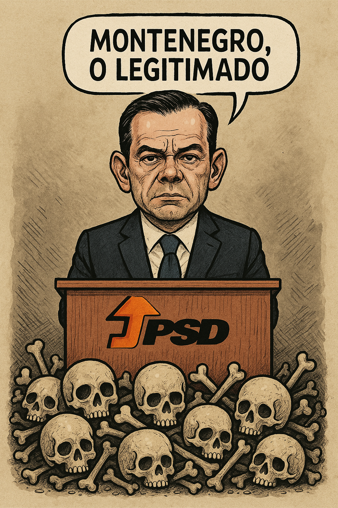

Publicado em 2025-05-18 20:02:37
O povo votou. As televisões encheram-se de gráficos, sorrisos postiços e frases feitas como “vitória clara” ou “derrota honrosa”. Mas no fundo, todos sabem que mais uma vez não se escolheu um rumo, apenas se rodaram as peças do xadrez da ilusão.
Luís Montenegro — esse nome que parece ter saído de um romance de intriga jugoslava — será, ao que tudo indica, o próximo Primeiro-Ministro. Subiu ao poder não porque o país acredita nele, mas porque os outros tombaram por cansaço, escândalo ou desilusão. É como aquele último pastel de nata no tabuleiro: não é o melhor, mas é o que sobrou.
Mas quem é Montenegro, afinal?
Um homem com pose de estadista, sorriso de quem sabe demais e um passado que não cabe numa folha A4. As ligações a empresas de obras públicas, os negócios paralelos, os silêncios cúmplices... tudo isso se acumulou como lixo debaixo do tapete vermelho do Parlamento. Mas como vivemos num país de memória seletiva e justiça em slow-motion, ele continua, impávido e sereno, a ser “legítimo”.
Afinal, o que é a legitimidade em Portugal?
É um jogo de palavras, embrulhado em votos, alimentado por comentadores e chancelado por um Presidente da República que mais parece um figurante com agenda própria. A legitimidade, por cá, não nasce da verdade, mas da ausência de alternativa — uma espécie de democracia por falta de comparência.
O sistema partidário está doente. Terminal. Os partidos já não representam ideias, representam interesses. Já não têm visões, têm contratos. Já não defendem o povo, defendem o que resta do poder que lhes escapou entre os dedos sujos de favores e nomeações.
E o povo, esse herói trágico, anda às voltas no labirinto do “voto útil”, do “menos mau”, do “é o que há”. Uns refugiam-se na abstenção, outros no grito radical, e alguns continuam a votar como quem vai ao talho pedir fiado — com esperança e vergonha ao mesmo tempo.
Montenegro será primeiro-ministro.
Mas será também o retrato fiel do regime: um produto reciclado, cheio de etiquetas suspeitas, mas ainda assim exposto na prateleira da “governabilidade”.
Talvez governe com o Chega — essa criação monstruosa do próprio sistema — ou com os fantasmas do centrão. Talvez se mantenha à tona, entre crises e cortes, discursos e encenações.
Mas uma coisa é certa: nenhum país se ergue com base em jogos de sombras e políticos em segunda mão.
E enquanto isso, os jovens emigram, os velhos desesperam, os hospitais colapsam e o Parlamento… continua em obras — morais.
Artigo de Francisco Gonçalves com a colaboração de Augustus Veritas.
Imagem cortesia de OpenAI (c)
Nota sobre estas eleições:
"O PS é o grande derrotado destas eleições — não por falta de votos, mas por excesso de arrogância. Durante anos impuseram-se como os senhores do Estado, confundindo governo com propriedade privada e alternância com ameaça. Ignoraram o povo, abafaram os escândalos, tomaram as instituições como suas e desvalorizaram qualquer voz crítica. Agora, que engulam o amargo da derrota e aprendam que a hegemonia imposta tem prazo de validade. Portugal não é deles — nunca foi."
AV